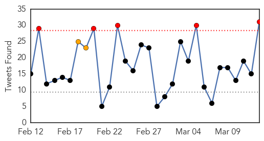
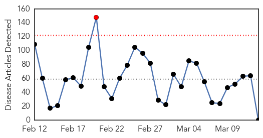
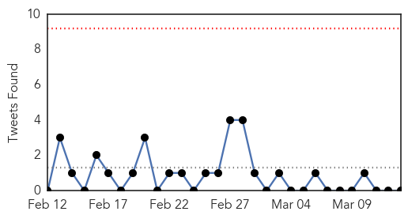

Ebola
30-Day Web Trend
0 alerts, 0 warnings
30-Day Twitter Trend
5 alerts, 2 warnings

Article Locations

Article Confidences

Top Articles:
-
No articles found for Mar 13, 2015
Top Tweets:
- 0.926
- Lack of Ebola Cases Shifts Vaccine Trials Away from Liberia - TIME http://t.co/vQ243YtZzG ebola EVD
- 0.926
- Lack of Ebola Cases Shifts Vaccine Trials Away from Liberia - TIME http://t.co/17zJVI9idR ebola EVD
- 0.894
- Measles deaths could surpass those from Ebola virus disease in west Africa because of vaccination disruptions. http://t.co/fX2zA9UGln
- 0.888
- Ebola: One military health worker has arrived in Newcastle from Sierra Leone - ChronicleLive http://t.co/abPHrznkYW ebola EVD
- 0.809
- RT: American working for charity Partners in Health contracts Ebola in Sierra Leone a reminder epidemic is ongoing. http:/…
- 0.769
- RT: Study: Gaps in immunization due to Ebola outbreak may mean an additional 100000 kids are vulnerable to measles. http:…
- 0.768
- UK says healthcare worker infected with Ebola in Sierra Leone is now in London's Royal Free Hospital. 2 contacts assessed discharged.
- 0.736
- 2014 Ebola Outbreak May Have Laid Tracks for Deadly Measles Epidemic in Africa@ICT_magazine http://t.co/Dko1Xc2kjk
- 0.725
- Socio-Economic Impact of Ebola Virus Disease in West African Countries http://t.co/Jr1JBvig78
- 0.696
- Could measles knock-on effect be as devastating as Ebola? - Medical News Today http://t.co/9BhVqkYV1Q ebola EVD
- 0.689
- American health worker to be treated for Ebola - Press Herald http://t.co/0LyxM1wrqb ebola EVD
- 0.676
- US Ebola Response Fed Fear Presidential Commission Says - Medscape http://t.co/WG4uQbmDdY ebola EVD
- 0.674
- Nancy Snyderman NBC's Ebola-Defying Doctor Resigns - Daily Beast http://t.co/v760Hin7RH ebola EVD
- 0.674
- Nancy Snyderman NBC's Ebola-Defying Doctor Resigns - Daily Beast http://t.co/MIRI0vARJn ebola EVD
- 0.674
- Dr. Nancy Snyderman leaves NBC News after breaking Ebola quarantine - Fortune http://t.co/vXcahCNx9C ebola EVD
- 0.670
- US healthcare worker with Ebola arrives at NIH for treatment - Reuters http://t.co/CmyZ2ME9Fk ebola EVD
- 0.669
- American diagnosed with Ebola to be flown to US from Sierra Leone - The Guardian http://t.co/qfi8ro3t0p ebola EVD
- 0.608
- RT: Lack of Ebola cases shifts vaccine trials away from Liberia http://t.co/IHzEUKaClm
- 0.602
- Ebola vaccine trials confronting samemix of skepticism fear rumor&understandable mistrust that helped spred Ebola http://t.co/lbbLr5hkFf
- 0.600
- Ebola Thief of Rituals Leaves No Graves to Decorate - New York Times http://t.co/nWsQwvNtOY ebola EVD
- 0.575
- American who contracted Ebola in Africa to be treated in US - The State http://t.co/7VYmzv4yFJ ebola EVD
- 0.547
- Mr. Mambia Goes To Washington: To Honor His Sister Who Died Of Ebola - NPR (blog) http://t.co/fvbQLfAX3P ebola EVD
- 0.538
- Powerful effects of Ebola outbreak felt outside worst-affected countries UN report finds http://t.co/to7EXmCoTh EBOLANEWS
- 0.536
- US healthcare worker with Ebola in 'serious' condition: NIH - Reuters http://t.co/Vd0fWve2tN ebola EVD
- 0.536
- US healthcare worker with Ebola in 'serious' condition: NIH - Reuters http://t.co/847CJnufir ebola EVD
- 0.535
- Ebola: British patient and four colleagues in UK hospitals - BBC News http://t.co/T9gwZcPHrC ebola EVD
- 0.531
- US healthcare worker with Ebola in 'serious' condition NIH says - Reuters http://t.co/sog7wKJgjF ebola EVD
- 0.531
- US healthcare worker with Ebola in 'serious' condition NIH says - Reuters http://t.co/lK33kjwscO ebola EVD
- 0.505
- Ebola: British patient and five colleagues flown home - BBC News http://t.co/A7ENPMFINc ebola EVD
- 0.505
- American and British Aid Workers Infected With Ebola in Sierra Leone http://t.co/vLY5y7D6ie EBOLANEWS
- 0.504
- Factbox: What is Ebola and how is it treated? - SBS http://t.co/Q0dGkAFMRL ebola EVD
Unknown
30-Day Web Trend
1 alerts, 0 warnings

30-Day Twitter Trend
0 alerts, 0 warnings

Article Locations

Article Confidences

Top Articles:
-
No articles found for Mar 13, 2015
Top Tweets:
-
No tweets found for Mar 13, 2015